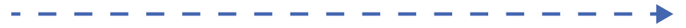

Aktivitets log
Kommende begivenheder 2016:
| Mar 19 |
Tak til alle Frivillige Fest
|

Tidligere begivenheder 2014 & 2015:
| Feb 5 | Sponsorevent | |
| Jan 26 | Koncert for frivillige i Forsamlingshuset | |
| Jan 23 | Kulturnat | |
| Jan 15 | AWG2016 Cafékoncert i Cafétuaq | |
| Jan 9 | Rekruttering til Foreningernes Dag i Godthåbhallen | |
| Jan 10 | Alle frivillige, der deltager vil modtage en halsedisse i Volunteer Center | |
| Jan 6 | Rekruttering til Årets Idrætsdag i Katuaq | |
| Dec 16 | Reception For Sponsorer i Nuuk Kunstmuseum | |
| Dec 11 | Julehygge For Frivillige i Komiteer | |
| Dec 5 | FN's Internationale Frivillighedsdag på Nuuk Center | |
| Dec 3-4 | GM Maliina Abelsen var keynotespeaker til Polarforskningskonference på AAU med AWG2016 som case | |
| Nov 24 | Frivilligheds arrangement for alle i Katuaq | |
| Nov 20 | Seminar for AWG2016 komite frivillige | |
| Nov 7 | Rekrutteringsevent i Nuuk Center | |
| Okt 21 | Åbent Hus i Volunteer Center | |
| Okt 10 | Seminar for AWG2016 komite frivillige | |
| Okt 3 | Rekrutteringsevent i Nuuk Center | |
| Sep 22-23 | Kivitsisa 2016 Seminar | |
| Sep 11-12 | M2 Møde i Nuuk | |
| Sep 6 | Half-Year-To-Go | |
| Aug 28 | Seminar for AWG2016 komiteformænd | |
| Aug 24 | Frivillighedskursus i Tasiilaq | |
| Aug 14 | Rekrutteringsevent på Nuuk Center | |
| Jun 21 | Event på Nationaldagen | |
| Jun 11 | Kursus i frivillighed i Paamiut | |
| Jun 11 | Projektledelse café for frivillige i komiteerne | |
| Jun 9 | Kursus i projektledelse for frivillige i komiteerne | |
| Jun 4 | DHL Stafet m / TELE-POST GRØNLAND | |
| Maj 2-7 | AWG2016 i Future Greenland | |
| Maj 6 | Rekrutteringsbegivenhed for interesserede frivillige i Grønlandsbanken | |
| Maj 1 | Opening Race for Maaji Nuan | |
| Apr 29 | Åbning af Volunteer Center | |
| Apr 25-26 | Test begivenhed for Biathlon på Qinngorput | |
| Apr 18 | Kursus: Værktøjer for Projektledelse til komitemedlemmer i Participants Entertainment (GUX studerende) | |
| Apr 17 | Seminar for AWG2016 komiteformænd | |
| Mar 23 | Præsentation af AWG2016 på Hotel Sisimiut | |
| Mar 17-24 | Sekretariatet deltager ved Arctic Circle Race i Sisimiut som frivillige for at få viden | |
| Mar 10-12 | Arctic Winter Games Internationale Komité og Chef de Mission møde i Nuuk | |
| Mar 6 | One Year To Go Event på Inussivik | |
| Feb 14 | Præsentation på den årlige Ungdomsparlament | |
| Feb 12 | Workshop med Sermersooq Erhvervsråd | |
| Jan 24 | Kulturnat: Ankomst af AWG2016 Mascot Kuluk | |
| Jan 19 | Lancering af AWG2016 frimærket | |
| Jan 17 | Seminar for AWG2016 komiteformænd | |
| Dec | AWG2016 kendingsmelodi konkurrence lanceret | |
| Dec 12 | Landsdækkende præsentation for de ansatte i Grønlandsbanken | |
| Dec 5 | Flash Mob i anledning af FNs internationale Volunteer Day sammen | |
| Nov 24-28 | Kursus i frivillighed i Sisimiut og Ilulissat | |
| Nov 21-22 | Seminar for AWG2016 komiteformænd | |
| Nov 14 | Præsentation af AWG2016 for gymnasieelever i GUX Nuuk | |
| Nov 8 | Præsentation af AWG2016 for Specialeforbunde i Grønland | |
| Nov 7 | Frivillighedskursus i Nuuk | |
| Nov 1 | Orienteringsløb i samarbejde med Nuuk Orienteringsklub, Sundhedsministeriet, Idræts-Forbund Grønland, Kommuneqarfik Sermersooq og ANU UNA | |
| Okt 16-18 | Arctic Winter Games International møde i Nuuk | |
| Okt 8 | Temadag med Aalborg Universitet: Værdiskabelse | |
| Sep 4 | Præsentation af Arctic Sports for gymnasie elever i GUX Nuuk | |
| Aug 8 | Præsentation af AWG2016 for Hans Kongelige Højhed Kronprins Frederik af Danmark | |
| Aug 2 | Sekretariatet for AWG2016 var frivillige i Nuuk Marathon | |
| Jun 21 | Sekretariatet for AWG2016 var frivillige under Kommuneqarfik Sermersooqs nationaldags arrangement | |
| Jun 11 | Frivillighedskursus i Qaqortoq | |
| Apr 25 | AWG2016 lanceret i Katuaq | |
| Mar 15-22 | AWG2016 deltager Arctic Winter Games 2014 i Fairbanks, Alaska | |
| Jan 25 | AWG2016 Logo afsløret under Kultur Aften i Katauq |
Tidligere begivenheder 2013:
|
Dec Nov |
Landsdækkende konkurrence for de elever i 4. klasse i Grønland i at tegne en maskot for AWG2016.
Logokonkurrence for AWG2016 |